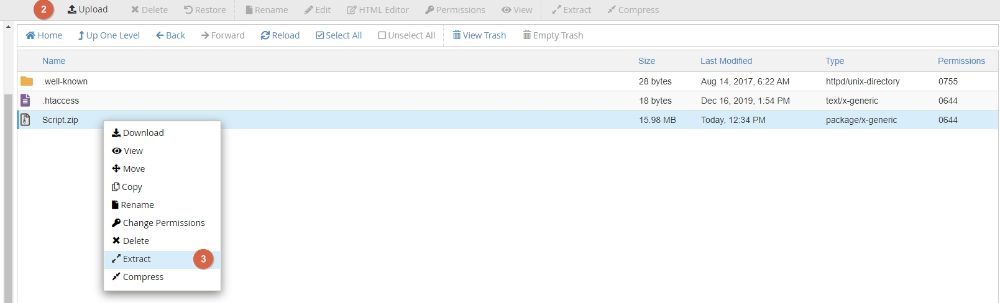
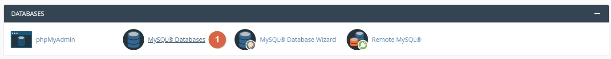
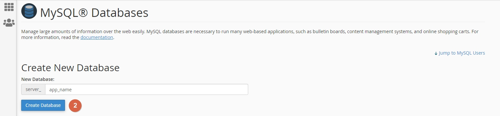
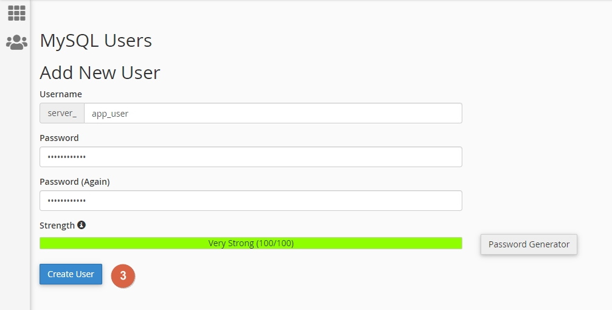
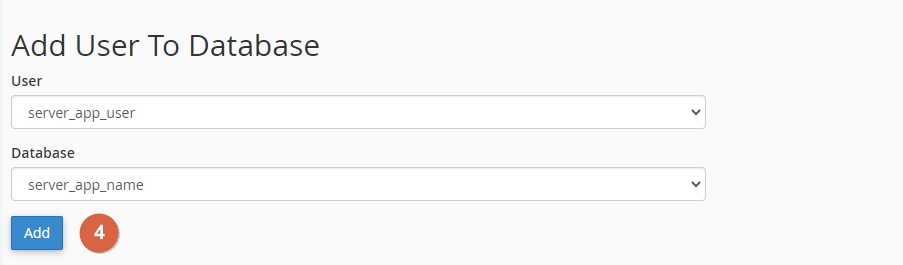
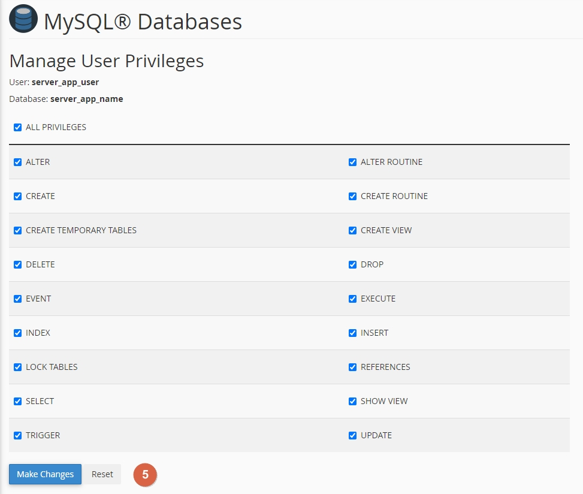

JustFans - Premium content subscription platform | Docs
1. Introduction
Hey, thanks for purchasing "JustFans - Premium content subscription platform". Here you'll find about everything you need in order to get started with launching your app. If you have any questions, don't hesitate do contact us.
2. Requirements
2.1.Webserver requirements
- Apache webserver with mod_rewrite or nginx webserver
- A Mysql 5.7.7+ or Mariadb 10.3.17+ database server
- PHP >= 7.2.5 preferably ran under php-fpm
2.2. PHP required extensions:
- BCMath
- Ctype
- Fileinfo
- JSON
- Mbstring
- OpenSSL
- PDO
- Tokenizer
- XML
- cURL
- GD
2.3. Other, optional requirements:
- FFMpeg (Optional, if not provided, only mp4 videos will be allowed)
- AWS S3 for files storage
- AWS CloudFront for secure assets access
- Stripe & Paypal seller accounts & API Keys
3. Files Setup
Before proceeding with the actual installation, we need to make sure that you unzip the script content onto the directory that is going to serve your domain. This can be either done via cPanel or command line.
3.1. Upload the script directory onto your server.
Locate the file manager and upload the Script folder onto your web serving directory
3.2. Extract archive contents.
3.3. Configure files permissions
In order for the script to work properly, you will need to configure the right permissions some of the files & folders you've just extracted. Set the access permissions (CHMOD) to 755 for the following folders:
vendorstoragebootstrap
You can find more info on how to update access permissions, depending on your setup, at:
- cPanel - Update file or folder permissions
- Plesk - Setting File and Directory Access Permissions
- For CLI usage, you can use
chmod 755 filenamefor single filer orchmod -R 755 directoryfor setting access to a directory recursively.
3.4. Changing the public directory Important
Configure your web server's document / web root to point to the public directory of the software. For example, if you've uploaded the software in example.com folder, your web directory should be changed to example.com/public folder.
You can find more info an how to change your site Document root over at:
- cPanel - New document root
- Defining a Custom Document Root
- For custom servers / VPSs you will have to change your DocumentRoot out of the site's virtual host file.
4. Database Setup
4.1. Create a new database
 4.2. Create a new mysql user
4.3. Add the user to the database
 You can find additional info on how to create databases and users, depending on your setup over at:
6. Installation via the GUI installer
The script comes with a ready to go web installer that you can access on the /install path, as in https://your-domain.com/install.
Once there, you should be able to see a panel like this, which will guide you through a simple, 3 steps installation process.

- 6.1. Checking requirements. If minimum requirements are not met, script will not be installable.
- 6.2. In this form, please enter the database host, name, user and password that you've created on step 3.
- 6.3. In this form you'll be able to set up site's name, your admin user and validate your script license.
Once you're done with the installation, you'll be able to customize the rest of your site's aspects via the admin panel.
5. Installation via command line Not recommended
If you even want to re-build the project from source, in case you want to do custom work, here are some useful commands.
Keep in mind that any modifications will be lost during updates.
- Rename the
.env.examplefile to.env - Create a database and add it to the
.envfile along side your mysql credentials and admin credentials - Copy the content of the `Script` folder into the directory that servers your domain/ip (eg:
/var/www/html/domain.com) - SSH into your server, go to the directory you've uploaded the files and run the following commands:
composer installphp artisan npm:installnpm run prodphp artisan storage:linkphp artisan key:generatephp artisan migratephp artisan db:seedphp artisan activate:product code={license_code}
7. Finishing up the installation
7.1. Setting up the payments providers
In order to be able to receive payments, you'll need to set up at least one payment provider for your app.
Navigating to Admin > Settings > Payments area, you will be able fetch your site's webhook endpoints to be used with Paypal and Stripe, and fields to fill in their Secret & Public keys.
- Login into your Stripe dashboard.
- From the secondary sidebar, please go to Developers > API Keys.
- Copy the
Publishable keyandSecret keyin the admin panel, over atAdmin > Settings > Payments, as in the screenshot above. - Next up, from the Developers tab, go to Webhooks and click on
Add endpoint - For the
Endpoint URL, please copy the webhook endpoint located atAdmin > Settings > Payments.. - For the
Versionfield, select the latest version. - Then, for the
Select events to listen to, go with theSelect all events.
- Login into your Paypal account, using the Paypal developer dasboard.
- Go to the My apps & credentials area, select the
Liveswitch button and then hitCreate appbutton to create a Paypal app. - Copy the Paypal's
ClientID& PaypalSecret Keyand add them into the admin into the Settings > Payments area. - Go to the My apps & credentials area, select the
Liveswitch button and then select your freshly created app. - Scroll down the page until you reach the
SANDBOX WEBHOOKSarea, where you'll need to click on theAdd Webhookbutton. - On the Webhook URL field paste your webhook URL. This can be found, as shown in the first screenshoot, over at
Admin > Settings > Payments. - For the
Event types, selectAll Eventsand hitSave
- Login into your Coinbase Commerce account, using coinbase commerce sign in.
- Go to Settings section.
- Search for API keys
- Click on Create an API key, copy the key and add it into the admin panel into Setting > Payments area.
- Search for Webhook subscriptions
- Click on Add an endpoint. The webhook url can be found over at
Admin > Settings > Paymentssection. - Then, click on Show shared secret and add that secret into the admin panel, over at
Admin > Settings > Payments
7.2. Setting up the emailing driver
For the mailing driver you can mainly choose between two main options, which is Mailgun via API or classic SMTP config. You also have the logging option, in case you're just debugging things.
The emailing settings can be found over at Admin > Settings > Emails. Here's a short description over the settings.
- Mail from name - Name in which the emails are sent, also attached to email footers.
- Mail from address - Email address sending from. EG: no-reply@domain.com
7.2.1 Log driver
The logging driver has mainly debugging purposes. Logged emails can be found under the storage/logs/laravel.log log file.
7.2.2 Mailgun driver
- Mailgun domain - The domain/subdomain you've set up to use with mailgun. Must have valid DNS records set up priorly.
- Mailgun secret - The domain API key
- Mailgun endpoint -
api.mailgun.netfor US orapi.eu.mailgun.netfor EU instances
7.2.3 SMTP driver
- SMTP Host - Your SMTP server host name / IP.
- SMTP Port - Generally
587for TSL and465for SSL. Can be different based on the email provider. - SMTP Encryption - TSL for non encrypted, SSL for encrypted emails
- SMTP Username - Your SMTP username
- SMTP Password - Your SMTP password
You can mainly test the emailing features by registering a new account and see if you get the verify email. If the settings are misconfigured, you might get a 500 error, while the account should still be created.
7.3. Setting up storage driver
7.3.1 Setting up AWS S3 hosting & CloudFront
If you dont want to use your server as hosting for your application files you have the option to use AWS S3 (including CloudFront and CloudFront Signed Url's) which is more faster and secure.
S3:To upload your data to Amazon S3, you must first create an Amazon S3 bucket in one of the AWS Regions.
- Go to AWS Console and login or create an account.
- After you successfully login into your account go to Search for services area and search for S3.
- Next up, you should be redirected to S3 page, click on
Buckets > Create bucket. - Set up your bucket
nameandregion. - Disable
Block all public accesscheckbox. - Enable
I acknowledge that the current settings might result in this bucket and the objects within becoming publiccheckbox. - The other options stay as default.
- Click on Create bucket after you make sure all the details are correct.
- After you successfully create the bucket, you need to generate the AWS access keys by going again to Search for services area and search for IAM (Identity and Access Management).
- Next up, go to
Access management > Usersand click on Add users. - Set an
usernameunder user details area and enableAccess key - Programmatic accessunder AWS access type area then click on Next. - Click on
Attach existing policies directlyunder Set permissions area then search forAmazonS3FullAccessand enable this policy (or you can add a custom policy) then click Next. - Add a tag if you want or leave it default and finish up the create user process.
- After you successfully generate the user make sure you save the AWS
Access Key IDandSecret access key. - Save
bucket name,AWS Access Key IDandAWS Secret access keyto the admin panel, over atAdmin > Settings > Storage.
When you want to use CloudFront to distribute your content, you create a distribution and choose the configuration settings you want.
- Follow steps from S3 section from above to create bucket.
- Go to Search for services area and search for CloudFront.
- Next up, you should be redirected to CloudFront page, click on
Distributions > Create distribution. - Set your bucket origin under
Origin > Origin Domainarea by searching for previously created bucket. - The other options can stay as default as long as you don't want something custom.
- After you successfully create distribution, save
Distribution domain nameto the admin panel, over atAdmin > Settings > Storageand enable CloudFront. - Check Steps for Creating a Distribution for more details about how to create and setup a CloudFront distribution.
To use signed URLs, you need a signer. A signer is a trusted key group that you create in CloudFront.
-
Create a key pair for a trusted key group:
- Run
openssl genrsa -out private_key.pem 2048command to generate the private key. - Use the following command
openssl rsa -pubout -in private_key.pem -out public_key.pemto extract the public key from the file namedprivate_key.pem.
The following steps use OpenSSL as an example of one way to create a key pair. There are many other ways to create an RSA key pair. - Run
-
To upload the public key to CloudFront:
- Sign in to the AWS Management Console and open the CloudFront console.
- In the navigation menu, choose
Key management > Public keys > Create public key. - For
Name, type a name to identify the public key. - For
Key, paste the public key. If you followed the steps in the preceding procedure, the public key is in the file namedpublic_key.pem. - Use the cat command on the macOS or Linux command line, like this:
cat public_key.pem. Copy the output of that command, then paste it into the Key value field. - Open the
public_key.pemfile with a plaintext editor like Notepad (on Windows) or TextEdit (on macOS). Copy the contents of the file, then paste it into the Key value field. - Click add and record the public key ID. You use it later when you create signed URLs, as the value of the
Key-Pair-Idfield.
To copy and paste the contents of the public key, you can: -
To add the public key to a key group:
- In the navigation menu, choose
Key management > Key groups > Create key group. - For
Name, type a name to identify the key group. - For
Public keys, select the public key to add to the key group, then choose Add. - Choose Create key group.
- In the navigation menu, choose
-
Adding a signer to a distribution:
- Record the key group ID of the key group that you want to use as a trusted signer.
- Open CloudFront console and choose the distribution whose files you want to protect with signed URLs or signed cookies.
- Choose the Behaviors tab.
- Select the cache behavior whose path pattern matches the files that you want to protect with signed URLs or signed cookies, and then choose Edit.
- For Restrict Viewer Access (Use Signed URLs or Signed Cookies), choose Yes.
- For Trusted Key Groups or Trusted Signer, choose Trusted Key Groups.
- For Trusted Key Groups, choose the key group to add, and then choose Add. Repeat if you want to add more than one key group.
- Choose Save changes to update the cache behavior.
- Save previously created public
Key-Pair-Idto the admin panel, over atAdmin > Settings > Storage. -
Copy previously created private key pair RSA file into project root by following steps:
- Copy
private_key.pemfile intoproject root. - Add private key file path to the admin panel, over at
Admin > Settings > Storageand enable CloudFront Signed Url's. (If you followed previously steps this path should look like thisprivate_key.pem)
- Copy
- At this point you can disable the public access for your S3 bucket.
- Check Serving private content with signed URLs for more details about CloudFront Signed Url's.
7.3.1 Setting up Wasabi storage driver
If you like to use Wasabi instead of S3 for file storage, that can be set by changing the storage driver, out of the Admin > Settings > Storage > Driver.
Once you've done that, you wil have to add your credentials which are available over the Wasabi website. Please make sure you account is validated, so buckets can be available to the public.
You will also need to add the following policy to your bucket:
{
"Version": "2012-10-17",
"Statement": [
{
"Effect": "Allow",
"Action": "s3:*",
"Resource": "*"
},
{
"Effect": "Allow",
"Action": [
"iam:*",
"sts:*"
],
"Resource": "arn:aws:iam::${aws:accountid}:user/${aws:username}"
}
]
}
7.4. Setting up Pusher
In order give the app realtime capabilities, used for User messenger & User notifications you will need a Pusher account. Once you got that, follow the steps below:
- Go to Pusher dashboard and go to the Channels category.
- Click on
Create app. Select anameandcluster regionat your preference. - Next up, you should be redirected to your new app page. If not, head over Apps and select your app.
- Copy over the
app_id,key,secretandclusterand add save them to the admin panel, over atAdmin > Settings > Messenger & Notificationsarea.
7.5. Setting up FFMpeg
In order to allow your users to upload all types of video formats, you will need to install FFMPEG on your server, if it doesn't have it already. If FFMPEG is not available, the allowed video extensions will fallback to .mp4 only.
7.5.1 FFMPEG on shared hosting
There are numerous shared hosting providers offering FFMPEG available hosting. Please check with your provider if FFMPEG is available.
7.5.2 Installing FFMPEG on Windows
In order to run FFMPEG on windows, head over this github page, download the latest win64 build and unzip it on your drive. Make sure FFMPEG is running under the same drive as the web server.
7.5.3 Installing FFMPEG on Ubuntu
sudo apt update sudo apt install ffmpeg
7.5 Installing FFMPEG on Rhel/Centos
Before proceeding with the installation, we'll need to set up some missing repositories, based on the OS version.
Centos 6$ sudo yum install https://dl.fedoraproject.org/pub/epel/epel-release-latest-8.noarch.rpm $ sudo yum install https://download1.rpmfusion.org/free/el/rpmfusion-free-release-8.noarch.rpm https://download1.rpmfusion.org/nonfree/el/rpmfusion-nonfree-release-8.noarch.rpm $ sudo yum install http://rpmfind.net/linux/centos/8-stream/PowerTools/x86_64/os/Packages/SDL2-2.0.10-2.el8.x86_64.rpmCentos 7
$ sudo rpm --import http://li.nux.ro/download/nux/RPM-GPG-KEY-nux.ro $ sudo rpm -Uvh http://li.nux.ro/download/nux/dextop/el7/x86_64/nux-dextop-release-0-5.el7.nux.noarch.rpmCentos 8
$ sudo dnf install https://dl.fedoraproject.org/pub/epel/ $ sudo dnf install https://download1.rpmfusion.org/free/el/rpmfusion-free-release-8.noarch.rpm $ sudo yum-config-manager --enable powertools $ sudo dnf install ffmpeg ffmpeg-devel
After the repos were added, continue with the installation by running the following command:
sudo yum install ffmpeg ffmpeg-devel
6.3.5 Adding the FFMPEG path to the admin
Copy the (full path) of the bin/ffmpeg and bin/ffprobe executables and copy them over the admin panel, at Admin > Settings > Media.
You can also test your FFMPEG set up & get full executables paths by running the following commands
ffmpeg -version # To test installation which ffmpeg && which ffprobe # To get full exec paths
7.6 Setting up the cron jobs Important
In order to get the platform fully functional, including the payment system, emails, offers and more, you will need to set up the following cronjob.
* * * * * cd /path-to-your-project && php artisan schedule:run >> /dev/null 2>&1
You can find more info an how to change your site Document root over at:
- cPanel - Add a cron job
- Plesk - Scheduling Tasks
- For VPS servers, you will need to add that line into your
/etc/crontabfile. Based on distribution settings, you might need to include the user as well.
8. Admin panel
8.1. General info & how to add new users
Once you got your main admin account set up, you can then manage your roles and other admins users from the admin panel itself.
If for some reason you lost access to the account, you can either reset the password of the user or create another and make it an admin using following command or SQL query:
php artisan voyager:admin your@email.comUPDATE users SET `role_id` = 1 WHERE `email` = 'your@email.com'
If everything went fine, the Admin panel will be available at http://your-domain.com/admin. The credentials are set during the installation / user creation.
8.2. Available admin settings
Here you can view and manage your website content and customize different aspects of it. Here's a quick description of the main settings available in the admin area.
- Dashboard - View quick info about your platform
- Media manager - Browse and manage all site's media
- Users management - Browse and manage all users and their associated data
- Process users identity checks based on uploaded IDs
- Manage user roles
- Manage user wallets
- Manage user notifications
- Manage user messages
- Manage user reactions
- Manage user lists
- Manage user lists members
- Manage user reports
- Posts management - Browse and manage all posts and their associated data
- Manage post attachments
- Manage post comments
- Manage post bookmarks
- Money management - View and manage subscriptions and payments related data
- Manage subscriptions
- Manage transactions
- Manage withdrawals
- Taxes - Manage taxes, countries and regions
- Pages - Create and manage public pages
- Settings - Change a wide variety of site settings
- Site settings
- Site title
- Site description
- Google Analytics Tracking ID
- Light site logo
- Dark site logo
- Site favicon
- Enable cookies box
- Allow (users to) switch to dark mode
- Allow (users to) change site direction (RTL-LTR)
- Allow (users to) switch languages
- Default site language
- Hide identity checks menu - Either show or hide the "Verify" setting category for users
- Enforce User Identity Check - If set to on, users will be required to complete an identity check upon posting content.
- Custom CSS Code - Custom code to inject in the platform
- Custom JS Code - Custom code to inject in the platform
- Admin settings
- Admin Title
- Admin Description
- Admin Loading spinner image
- Admin Icon Image
- Admin Background Image
- Feed settings
- Posts per page
- Suggestion box total cards
- Suggestion box cards per page
- Autoplay suggestions box slides
- Disable right click on media & view page source
- Allow post galleries Zoom in
- Media settings (See 7.4. Setting up FFMpeg)
- FFMpeg Path
- FFProbe Path
- Allowed file extensions
- Max file uploads size (MB)
Do not exceed PHP limits - Max videos length (In seconds)
- Apply watermark over uploaded assets
- Watermark image
- Use profile url watermark - Adds user site profile url as a wattermark
- Messenger & Notifications settings (See 7.3. Setting up Pusher)
- Invoices settings - Set payment receiver invoice details & Invoices Prefix
- Payments settings (See 7.1. Setting up the payment )
- View stripe & paypal & coinbase webhooks links
- Coinbase API Key (If not provided, Coinbase payments are disabled)
- Coinbase Webhooks Secret
- Stripe Public Key (If not provided, Stripe payments are disabled)
- Stripe Secret Key (If not provided, Stripe payments are disabled)
- Stripe Webhooks Secret
- Paypal Client Id
- Paypal Secret (If not provided, Paypal payments are disabled)
- Paypal Secret (If not provided, Paypal payments are disabled)
- Paypal Live Mode ( Must be enabled to receive payments, otherwise, sandbox environment will be used.
- Site Currency Code
- Site Currency Symbol
- Emails settings
- Email driver - Choose between Log/SMTP/Mailgun. We recommend mailgun via API.
- Mail from name
- Mail from address
- Additionally, each email driver comes with it's configuration fields that must be filled in properly.
- Storage settings (See 7.2. Setting up AWS & CF for advanced configs)
- Storage driver (Choose between locally hosted files, S3 or Wasabi ones)
- Aws Access & Secret Key
- Aws Region & Bucket name
- Aws CloudFront Enabled (If enabled, assets will be served via CloudFront)
- Aws CloudFront Domain Name
- Aws CloudFront PreSigned Url's Enabled
- Aws CloudFront Private Key Path
- Social media
- Set your social media footer links.
- Withdrawals and Deposit
- Set your deposit and withdrawal minimum and maximum constrains.
- Ad spaces
- Sidebar Ad - Ad to show in feed & profile right sidebars.
- For the email driver, we recommend going with the mailgun API Key based method, not the SMTP one, which can slow down the request time.
- For the assets hosting, we strongly recommend using AWS S3 & CloudFront with Presigned URLs. This is the only way you can protect your users assets, meaning the images and video links are served via CloudFront and links are temporary & IP locked.
9. How to update
- Make a backup of the
.envconfig file located on your server. - Upload and replace all the files on your server with what's inside the
Scriptfolder. - Restore your
.envconfig file on your server. - Go to
https://example.com/updateand follow the update wizard.1
- Updates that do not have database changes, will not show up in the update wizard.
9. FAQ
-
I have a support inquiry, a question or a problem, how can I contact you?You can contact us here or send us a DM on Envato.
-
What hosting do you recommend?We recommend using DigitalOcean, as they offer great performance and flexibility at an affordable price.
-
Is installation included in the price?No, installation is not included. We offer installation services for an extra fee, for which you can send us a message.
-
My website returns a Not Found message, why?Please ensure that you have
mod_rewriteenabled on your server. -
How can I translate my website?Make a copy of the default
en.jsonlanguage file found in/resources/langfolder, and change it according to your needs. -
How can I reskin my website?
- You need to Have node installed on the server
- Update the colors over at following files
resources/sass/_variables.scssandresources/sass/_variables-dark.scss - Run
npm run prodover the script directory
You new theme will be generated under the
public/themedirectory. You will have to make sure you don’t override it during updates. -
How can I edit my homepage?
Generally, for each page, including homepage, you will have a skeleton like this one:
- page.blade.php view file (for HTML)
- page.js (For Javascript changes)
- page.css (For CSS changes)
So for the homepage, you would have
home.css, home.js, home.blade.php, etc. However, you will have to back up and replace your updated files after each update you do on the instance. -
How can update my custom modified version of the script?
Our recommendation regarding maintaining custom modified version of the platform is the following:
- Create your own (private) github/gitlab repository
- Host your custom code changes on a separate branch
- Update the main branch with the new update
- Merge the updated version onto your branch (resolve any conflicts if that’s the case)
- Release your (custom) updated version of the script
- Update the platform, as per How to update section
-
My website returns a blank page, why?This generally happens when one of the server requirements is not met, please ensure your server meets the software's requirements.
10. Contact us
For questions, do not hesitate to contact us by sending us an email at qdev.office@gmail.com or visit our site at Qdev Techs. Or you can send us a message via Envato.